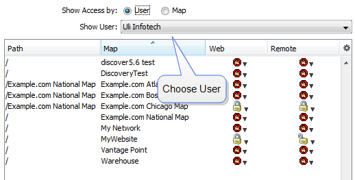
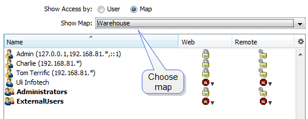

Controlling Access to a Map
You can use the Map Access panel of the Server Settings window to authorize
access to a map to one or more users or groups.
Note:
All individuals in the Administrators group have access to all
maps.
The Map Access Panel
InterMapper lets you control the access rights to each map in two ways:
- Control access by user
- View each user's rights to a particular
map
- Control access by map - View each map's access rights for a particular
user
The top example shows the list sorted per-user: it shows the rights that
Crabby Appleton has for each of the maps. The bottom example shows the list
sorted per-map: that is, it shows what access each user has to the Current
Wireless Probes map.
Controlling Map Access by User
Choose Show Access by: User to control each map's access by
a specific user through the Web and Remote servers.

- To set a user's access for any open map, choose the user from the Show
User dropdown menu.
- To allow access to the selected map through the Web server, click the
icon in the Web column for the user or group whose
access permissions you want to set, then select a permission level.
- To allow access to the selected map through the Remote server, click the
icon in the Remote column for the user or group whose
access permissions you want to set, then select a permission level.
Controlling User Access by Map
Choose Show Access by: Map to control each user's access to
a specific map through the Web and Remote servers.

- To set access control parameters for any open map, choose that map from
the Map Name dropdown menu.
- To allow access to the selected map through the Web server, click the
icon in the Web column for the user or group whose
access permissions you want to set, then select a permission level.
- To allow access to the selected map through the Remote server, click the
icon in the Remote column for the user or group whose
access permissions you want to set, then select a permission level.
Map Access Permission Levels
Select a map's Web and Remote server access permission levels for each user
or group as described below:

|
No Access
|
Deny access to this map.
|

|
Read-Only Access
|
Allow the user to view the map, but do not allow changes.
(Access to the web server is always read-only.)
|

|
Read-Write Access
|
Allow the user to view and edit the map.
|